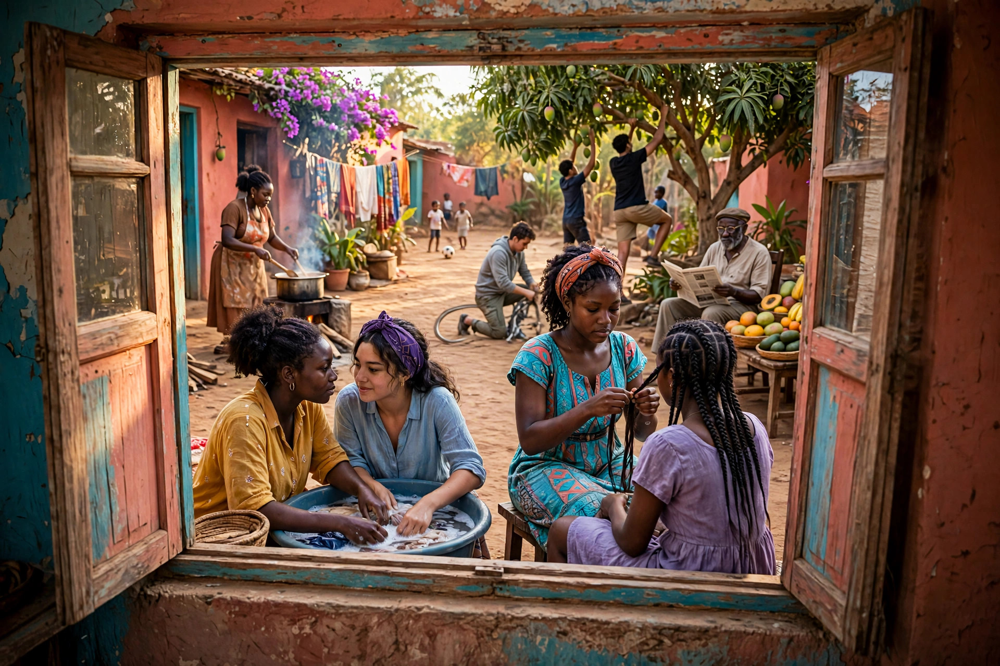

Bienvenue ici, chez toi
Des histoires qui parlent de nous
Des récits de vie, d'amour, de famille, d'épreuves et d'espoir. Des histoires vraies ou inventées, mais qui ressemblent à ce qu'on traverse — et où chacun peut se reconnaître.
Entrer dans les histoires ↓« Il y a des histoires qu'on lit… et des histoires qui nous lisent. »
Des histoires pour chaque coin de la vie
🌱
Vie
Le quotidien, les choix, les commencements.
❤️
Amour
Ce qui rapproche, ce qui blesse, ce qui guérit.
🏠
Famille
Les liens qui nous portent depuis toujours.
🌧️
Épreuves
Les jours difficiles, et comment on s'en relève.
🌅
Espoir
La lumière qui revient, même après la nuit.
✨
Foi
Ce qui nous tient debout quand tout vacille.
Les histoires
Aucune histoire publiée pour le moment. La première arrive bientôt.
— Fin du récit — Merci de m'avoir lue. —